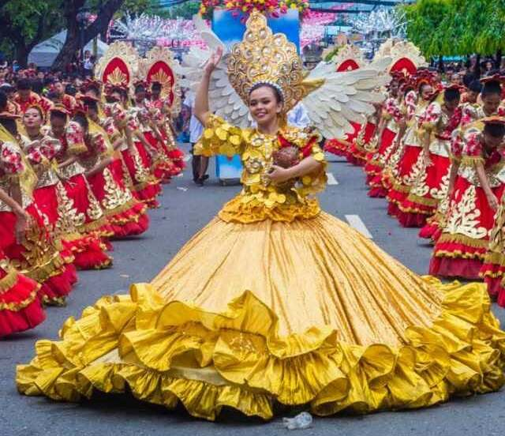
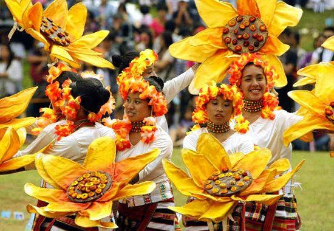
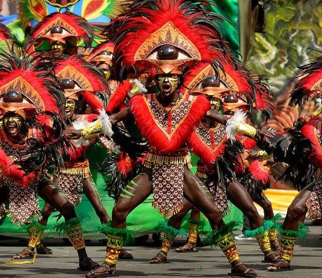
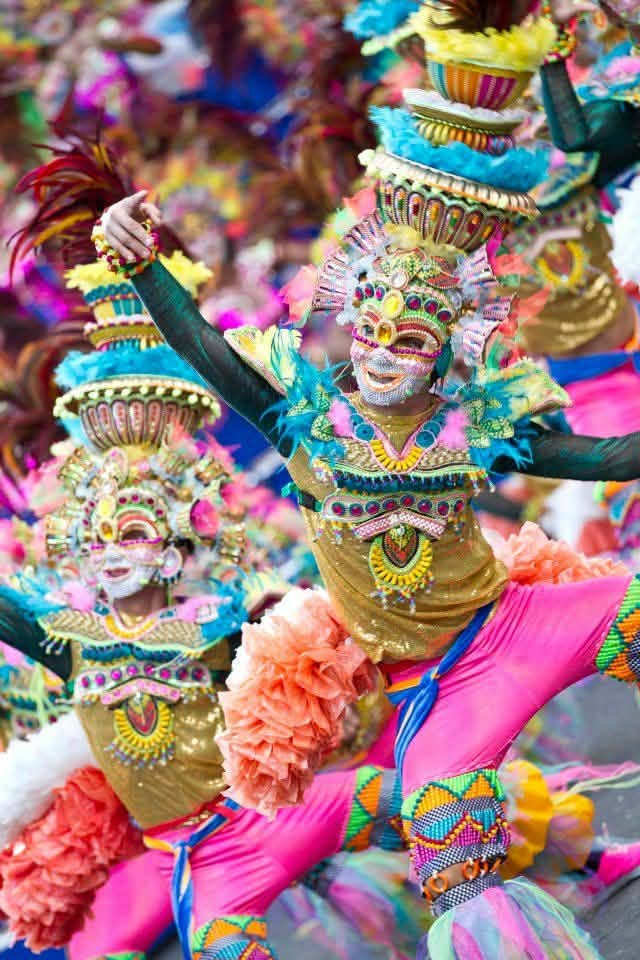
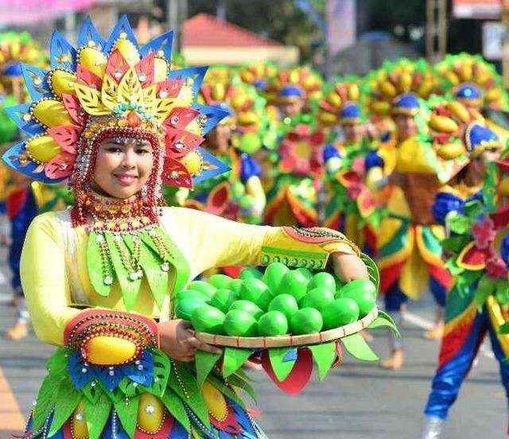
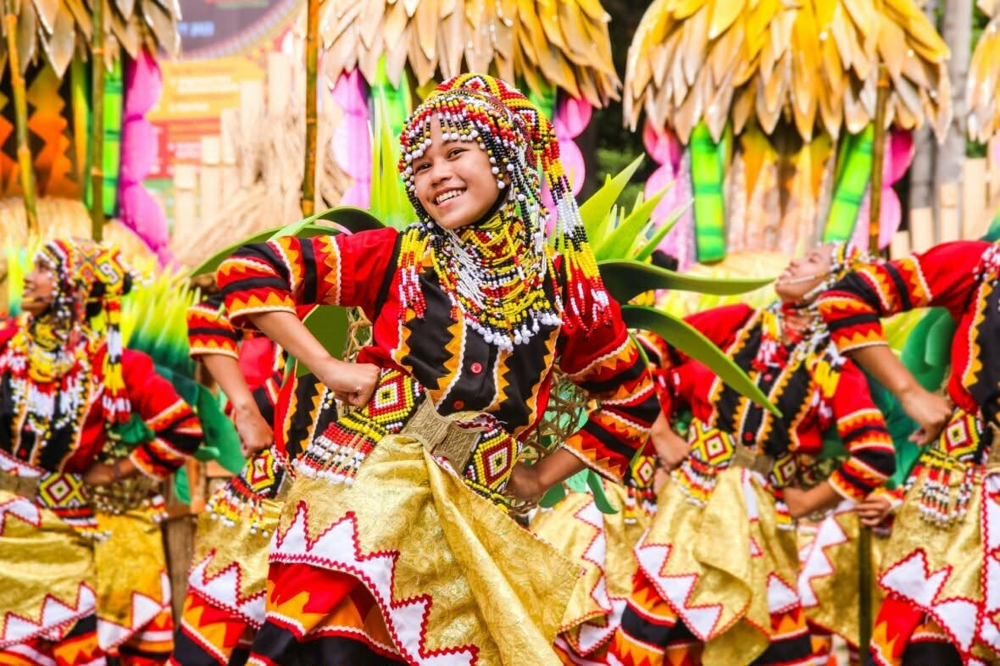

| HOME |

The Sinulog Festival is celebrated every 3rd week of January, specifically on the 3rd Sunday of January, in Cebu City, Philippines. Cebu is the center of this celebration because it is home to the Basilica Minore del Santo Niño, where the original image of the Santo Niño is kept. This sacred image was given by Ferdinand Magellan to Queen Juana in 1521 as a gift of baptism and friendship. This moment marked the beginning of Christianity in the Philippines and the conversion of the Cebuanos to the Catholic faith. The word "sinulog" comes from the Cebuano word "sulog", which means the movement of water in a river. The Sinulog dance uses forward and backward steps to imitate the flow of the river. It is a way to remember the conversion of the Cebuanos and to honor the Santo Niño through prayer and movement.
Sinulog is important for three main reasons: religious, cultural, and economic. Religiously, it is an act of thanksgiving, faith, and devotion to the Santo Niño. Millions of devotees join Masses, processions, and prayers because they believe in the miracles and blessings of the Holy Child Jesus. Culturally, Sinulog shows the joy, creativity, faith, and unity of the Filipino and Cebuano people through traditional music, colorful costumes, street dancing, and rituals passed down for generations. Economically, the festival attracts local and international tourists, which greatly helps businesses, tourism, hotels, transportation, and livelihood in Cebu. The main activities include the Fluvial Procession where the Santo Niño is brought by boat from Mandaue to Cebu, the Solemn Foot Procession, the Sinulog Grand Parade and Ritual Dance Competition with drums and the chant "Pit Senyor!" meaning "Hail to the Lord", and Holy Masses and a 9-day Novena before the feast day.

The Panagbenga Festival, also called the Baguio Flower Festival, is a month-long annual flower occasion in Baguio, Philippines. The festival, held in February, was created as a tribute to the city's flowers and as a way to rise from devastation of the 1990 Luzon earthquake. The festival includes floats that are covered mostly with flowers. The festival also includes street dancing, presented by dancers in costumes such as bahag in male and floral for female, that is inspired by the Bendian, an Ibaloi dance of celebration that came from the Cordilleras.
Panagbenga is an annual flower testival celebrated every February which takes place in Baguio City. Philippines. The term "Panagbenga" comes from a Kankanaey term meaning "season of blooming". This testival reflects the history, traditions and values of Baguio and the Cordilleras.

The Ati-Atihan Festival is celebrated every 3rd week of January, specifically on the 3rd Sunday of January, in Kalibo, Aklan, Philippines. Kalibo is the center of this celebration and the birthplace of the festival, earning it the title "The Mother of All Philippine Festivals." The history of Ati-Atihan has both cultural and religious roots. Culturally, the word "Ati-Atihan" means "to be like the Ati" or the indigenous Aeta people of Panay. In the 13th century, ten Bornean Datus escaped to Panay Island and were peacefully welcomed by the native Ati. To celebrate their peace, friendship, and land agreement, the settlers painted their faces and bodies with black soot or charcoal to look like the Ati and danced alongside them. Religiously, when the Spanish colonizers arrived, they integrated Christianity into the tradition and rededicated the festival to honor the Santo Niño (Holy Child Jesus), who locals believed protected Kalibo from pirate attacks during ancient times.
Ati-Atihan is important for three main reasons: religious, cultural, and economic. Religiously, it is a deep expression of faith, active prayer, and thanksgiving to the Santo Niño. Devotees participate in street dancing as a living prayer for blessings and protection. Culturally, the festival keeps pre-colonial Philippine history alive by honoring the heritage of the indigenous Ati people and showcasing Filipino unity, rhythm, and artistic expression. Economically, the week-long festivities draw thousands of local and international tourists, providing a huge boost to Aklan's local businesses, hotels, transportation, and tourism industry. The main activities include "Sadsad" or energetic street dancing where everyone covers their faces in charcoal/soot, tribal music performances with beating drums, solemn religious processions, and the grand street parade where participants and spectators together shout the iconic chants "Hala Bira!" and "Viva kay Santo Niño!"

The MassKara Festival is a vibrant cultural celebration held every October in Bacolod City, Philippines, known as the “City of Smiles.” Its main highlight is celebrated on the third Sunday of October (for example, in 2026, it falls on October 18), although the festival usually runs for two to three weeks with various events leading up to the grand celebration. It began in 1980 during a time of economic crisis and tragedy in Negros Occidental, when the sugar industry declined and a tragic sea accident affected many families. To uplift the people’s spirits, the local government and artists created the festival, encouraging everyone to smile despite hardships. The name “MassKara” comes from the words “mass” (many people) and “cara” (face), meaning a multitude of smiling faces, which is reflected in the colorful masks worn by performers.
The festival features lively street dancing, music, and grand parades, including the famous Electric MassKara held at night with bright lights and decorations. It also includes beauty pageants, food fairs, concerts, and cultural shows that highlight Filipino creativity and talent. Every year, tens of thousands of people celebrate the festival, with major events attracting around 45,000 to 50,000 attendees or more, including both locals and tourists. More than just entertainment, the MassKara Festival symbolizes resilience, unity, and optimism. It plays an important role in boosting tourism and supporting local businesses, while also preserving the culture and identity of Bacolod and its people.

The Pahiyas Festival is celebrated every May 15 each year in honor of the feast day of San Isidro Labrador, the patron saint of farmers. Lucban, Quezon is known as the birthplace of this celebration, but it is also held in other towns in Quezon such as Sariaya, Tayabas, and Gumaca. The festival began as a way for farmers to give thanks to San Isidro for a bountiful harvest. To show their gratitude, houses are decorated with brightly colored kiping made from rice, along with fruits, vegetables, rice stalks, and other products from the farm. The word Pahiyas means decoration or adornment, which refers to how homes are transformed into colorful displays during the feast. This tradition is a way to remember the hard work of farmers and to ask for blessings for the next planting season.
Pahiyas holds deep meaning for the people of Quezon in religious and cultural ways. Religiously, it is an act of thanksgiving and devotion to San Isidro Labrador. Farmers offer their first harvest and pray for protection and abundance. Culturally, Pahiyas preserves Filipino traditions and creativity. The art of making kiping chandeliers, the use of natural materials for decoration, and the community bayanihan spirit have been passed down for generations.
The main activities include the decoration and judging of the most beautiful houses, the street parade, and cultural shows. At the end of the day, some decorations like kiping are taken down and shared or eaten as a symbol of sharing the blessings.

The Kadayawan Festival is a vibrant thanksgiving and cultural celebration held every August in Davao City, Philippines, known as the “Fruit Basket of the Philippines.” Its main highlights fall on the third week of August.
It began as a way to honor life, nature, and peace. Before the modern festival, indigenous communities held thanksgiving rituals for abundant harvests. It was previously called the Apo Duwaling Festival, named after Mount Apo, durian, and the waling-waling orchid. In the 1980s it officially became "Kadayawan sa Dabaw." The name “Kadayawan” comes from the Mandaya word “madayaw,” meaning good, beautiful, valuable, or prosperous.
The festival features lively street dancing, music, and grand parades, including Indak-Indak sa Kadalanan where contingents in vibrant tribal-inspired costumes perform to drums and indigenous music, and Pamulak sa Kadayawan, the floral float parade with floats decorated with fruits, flowers, and native materials showcasing Davao’s bounty.
It also includes beauty pageants, food fairs, agri-trade exhibits, concerts, and cultural shows that highlight the traditions of Davao’s 11 ethnolinguistic tribes.
With the major events attracting tens of thousands of spectators, and overall tourist arrivals reaching 180,000 to 250,000 people every year, Kadayawan draws both locals and visitors from across the country and abroad.
More than just entertainment, the Kadayawan Festival symbolizes gratitude, unity, and abundance. It plays an important role in boosting tourism and supporting local farmers and businesses, while also preserving the culture and identity of Davao and its people.